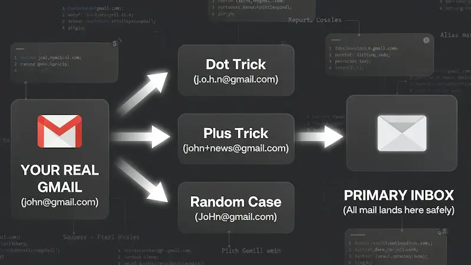

Gmail Alias Generator Pro
Generate Unlimited Unique Aliases for Privacy & Testing — No Data Stored, Ever.
You can enter just a username (defaults to @gmail.com) or a full custom email address.
Master Your Digital Footprint: One Email, Infinite Possibilities
In today's digital landscape, handing over your primary email address to every website is a recipe for spam and security risks. But creating a new email account for every service is impossible. Enter the Advanced Alias Generator.

Visualizing how aliases protect your real email address while keeping your inbox unified.
This tool isn't just a randomizer; it is a privacy shield. By leveraging standard email protocols (RFC 5233), it allows you to transform your single Gmail or custom domain address into thousands of unique variations. All emails sent to these aliases arrive safely in your main inbox, but you gain the power to filter, track, and block them individually.
How to Use: Step-by-Step Guide
Follow these simple steps to generate thousands of secure aliases in seconds:
-
Enter Input: Type your username (e.g.,
john) or full email address in the first box. - Choose Quantity: Select how many variations you need from the dropdown list.
-
Configure Settings:
- Dot Trick (.): Inserts random dots within the username.
- Plus Trick (+): Appends a tag like
+news. Choose between random characters or your own custom tags (comma-separated). - Random Case: Randomizes uppercase and lowercase letters for the Username, Suffix, AND Domain. Great for bypassing filters.
- Generate & Export: Click Generate Aliases. Once complete, use Copy All or Export .TXT to save your list.
Smart Ways to Use These Aliases
Professionals and privacy enthusiasts use this tool daily. Here is how you can get the most out of it:
-
Detect Data Leaks: Use a unique alias for every sign-up (e.g.,
name+facebook@gmail.com). If that email starts receiving phishing links, you know exactly which service suffered a data breach. - Developers & QA Testers: Need to test a sign-up form 50 times? Generate 50 valid aliases in seconds to verify email delivery and user flows without cluttering your system.
-
Organize Your Inbox: Set up filters in Gmail. Move all emails sent to
name+newsletter@gmail.cominto a "Read Later" folder, keeping your primary inbox clean.
Our Privacy Guarantee
We believe privacy tools should be private. Unlike other generators that process data on a server, Trusted Tools Web operates 100% Client-Side.
This means the email address you type in the input box never leaves your browser. The calculation happens right on your device. We do not store, save, or transmit your email address to anyone — not even ourselves.
The "First Order" Discount Hack
We all love those "Get 20% off your first order" coupons, but they usually limit you to one per email. With this generator, you don't need to create a new Gmail account every time. Just generate aliases like name+shop1@gmail.com, then name+shop2@gmail.com, and so on. The store sees a new customer, but every coupon code lands right in your main inbox.
Catching Data Sellers Red-Handed
Ever wonder how a random insurance company got your email? Use a specific alias for every service. If you sign up for a gym using name+gym@gmail.com and suddenly start receiving spam from a car dealership on that exact address, you have proof — and you can block that alias without affecting any others.
Managing Multiple Social Profiles
Social media managers struggle with platforms that require a unique email for every handle. Instead of juggling passwords for ten different Gmail accounts, use aliases. You can manage all verification codes in one inbox while platforms treat each alias as a completely separate user.
A QA Engineer's Best Friend
If you are building an app, you need to test the "Sign Up" flow hundreds of times. Manually creating emails is a waste of time. Our bulk generator allows you to grab 1,000 valid emails instantly to run automated tests and verify that your database handles user registration correctly.
The Digital "Burner" Strategy
Signing up for dating apps or meeting people online requires caution. You don't always want strangers to have your primary email. Use an alias to keep your real identity obscured until you trust the person, adding an extra layer of personal security without creating a disposable account you might later regret losing.
Organizing Your Job Hunt
Job hunting can be chaotic. Try using a dedicated alias like name+jobs@gmail.com for all your applications. Set up a Gmail filter to star these emails or play a specific sound when they arrive. You will never miss an interview call again because it got buried in the Promotions tab.
Decluttering: The "Inbox Zero" Secret
Newsletters are great until they take over your life. Subscribe with name+news@gmail.com and create a Gmail rule to automatically skip the inbox and move these to a "Read Later" folder. Your main inbox stays clean for important personal and work communication.
Outsmarting "One Account" Rules
Some websites allow only one account per person, but many have lenient email validation. They check if user@gmail.com exists but fail to recognise that u.s.e.r@gmail.com is the same address. Our Dot Trick and Random Case features exploit these technical oversights to give you access where others are blocked.
The Security "Kill Switch"
If your primary email gets onto a hacker's list, you are in trouble. But if you used an alias for a specific service and that service gets breached, you are safe. Simply create a filter to delete all incoming mail to that alias. It acts like a kill switch for compromised accounts, protecting your master inbox from phishing floods.
Squeeze More Out of Free Trials
Software services (SaaS) often offer 7-day trials. Sometimes 7 days isn't enough to evaluate a complex tool. By using aliases, you can legally extend your evaluation period to ensure the software truly meets your needs before committing to a monthly subscription. It's smart consumerism.
Why Not Just Use "10-Minute Mail"?
You might have seen sites offering "Temporary Emails" that self-destruct. While they are fun, they are dangerous for serious accounts. Imagine signing up for a crypto exchange using a temporary mail. If you ever forget your password, that account is gone forever because the email no longer exists.
This Generator is different. Since these aliases are based on your real Gmail, you own them forever. You get the privacy of a fake email with the security of a permanent inbox. It is the best of both worlds.
The "Credential Stuffing" Defense
Hackers often use a technique called "Credential Stuffing." If a small website gets hacked and leaks your email/password, hackers try that same combination on Facebook, Amazon, and PayPal. Since most people use the same email everywhere, it often works.
But if you use a unique alias for every site, this attack fails completely. Even if hackers get your login from one site, they cannot guess your username on any other site — a simple habit that makes you nearly unhackable.
A Secret Weapon for Freelancers & Agencies
If you manage social media accounts or ads for multiple clients, logging in and out is a nightmare. Most platforms require a unique email for every account.
Instead of creating 10 different Gmail accounts for 10 clients, just use agency+client1@gmail.com, agency+client2@gmail.com, etc. All verification codes come to your main inbox, but each platform treats them as completely separate users — saving hours of setup time.
Frequently Asked Questions
Does this work with Yahoo or Outlook?
The Plus (+) trick works with almost all major providers including Outlook, Yahoo, and iCloud. However, the Dot (.) trick is specific to Gmail and Googlemail. If you use a custom domain hosted on Google Workspace, both tricks apply.
Will I actually receive emails sent to these aliases?
Yes. Gmail natively recognises all dot and plus variations of your username as identical. Any email sent to an alias routes directly to your primary inbox. You can then filter or label them as you wish.
Is this tool free? Is there a usage limit?
Yes, completely free. The limit on generated aliases per session is set by the tool configuration (default 20,000). All processing happens locally in your browser — no account or sign-up required.
Can I use this for accounts that require email verification?
Absolutely. Because these are real Gmail aliases (not fake addresses), verification emails and OTP codes are delivered directly to your inbox. This makes the tool invaluable for QA testing and multi-account management.
Initializing secure discussion portal...